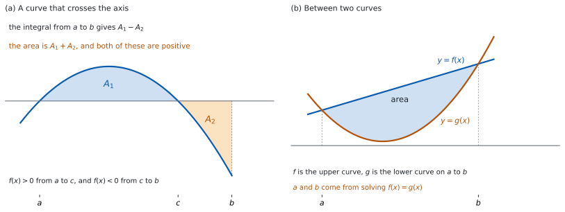

SL 5.11b — Areas（符号のある面積と、\(2\) 曲線ではさまれた面積）
- \(f(x) > 0\) のときの面積を、定積分で書ける。
- \(f(x) < 0\) のとき、面積は積分の値の \(-1\) 倍になることを説明できる。
- \(A = \displaystyle\int_{a}^{b} \lvert y\rvert\,dx\) が公式集のどこにあるかを知っている。
- 符号の変わる点で区間を分けて、面積を求められる。
- \(2\) 曲線ではさまれた面積を、上の式 \(-\) 下の式で書ける。
- 交点を求めて、積分の上端・下端を決められる。
- まず式を書いてから、値を求められる。
The idea
1. \(f(x) > 0\) のとき
曲線が \(x\) 軸より上にあるときは、定積分がそのまま面積です（SL 5.5）。
\[ A = \int_{a}^{b} f(x)\,dx, \qquad f(x) \geq 0 \text{ on } a \leq x \leq b \tag{1}\]
条件が付いていることに気をつけてください。 区間の中で \(f\) が負になるところがあると、この式は面積になりません。\(f(x) = 0\) になる点があるのはかまいません。
上端・下端が問題文にないこともあります。 「曲線と \(x\) 軸が囲む領域」とだけ書いてあるときは、\(f(x) = 0\) を解いて、となり合う \(2\) つの解を上端・下端にします。
2. \(f(x) < 0\) のとき
\(x\) 軸より下にあるときは、定積分の値が負になります（図 1 (a)）。面積は正の数なので、符号を変えます。
\[ A = -\int_{a}^{b} f(x)\,dx, \qquad f(x) \leq 0 \text{ on } a \leq x \leq b \tag{2}\]
「面積が負になった」ということは起こりません。 負の値が出たら、それは面積ではなく積分の値です。
マイナスを前に書くか、上下を入れかえるかは同じことです（SL 5.11a）。答案では、マイナスを前に書くほうが読みやすくなります。
3. 絶対値でまとめる
\[ A = \int_{a}^{b} \lvert y\rvert\,dx \tag{3}\]
公式集の 5.11 の欄に、Area of region enclosed by a curve and \(x\)-axis として 式 3 が印刷されています。おぼえる必要はありませんが、どこにあるかは知っておいてください。
この式は「考え方」を書いたものです。 絶対値が付いたままでは、いつもの規則で原始関数を書けません。実際に計算するときは、符号の変わる点で分けます（第 4 節）。
シラバスは、この項目について次のように書いています。
Areas of a region enclosed by a curve y = f (x) and the x-axis, where f (x) can be positive or negative, without the use of technology.
つまり、電卓なしで求められる形が出ます。
4. 符号の変わる点で分ける
まず \(f(x) = 0\) を解いて、符号が変わりうる点を見つけます（SL 5.2）。解が見つかったら、その前後で \(1\) 点ずつ値を調べて、本当に符号が変わっているかを確かめます。\(f(x) = x^{2}\) の \(x = 0\) のように、解であっても符号が変わらないことがあります。図 1 (a) のように \(c\) で符号が変わるなら、次のように書きます。
\[ A = \int_{a}^{c} f(x)\,dx - \int_{c}^{b} f(x)\,dx \tag{4}\]
\(f < 0\) の部分にだけマイナスを付けます。 どちらの部分も正の数になります。
分けずに \(\displaystyle\int_{a}^{b} f(x)\,dx\) を計算すると、打ち消し合います。 それは面積ではありません（SL 5.11a）。
5. 手順
| 手順 | すること |
|---|---|
| \(1\) | \(f(x) = 0\) を解いて、符号が変わりうる点を見つける |
| \(2\) | 見つけた点の前後の \(1\) 点で値を調べ、符号が変わっているかを確かめる |
| \(3\) | 符号ごとに区間を分ける |
| \(4\) | \(f < 0\) の部分にマイナスを付けて、式を書く |
| \(5\) | それぞれの定積分を計算する（SL 5.11a） |
| \(6\) | 足して、正の数になっていることを確かめる |
シラバスは、答案の書き方についてこう書いています。
Students are expected to first write a correct expression before calculating the area.
求められているのは、値の前に式を書くことです。 手順 \(4\) の行を、答案に残してください。
6. \(2\) 曲線ではさまれた面積
上の式から下の式を引いて、積分します（図 1 (b)）。
\[ A = \int_{a}^{b} \bigl(f(x) - g(x)\bigr)dx, \qquad f(x) \geq g(x) \text{ on } a \leq x \leq b \tag{5}\]
式 5 は公式集にありません。 自分で使えるようにしておいてください。
\(x\) 軸より下にあっても、そのまま使えます。 縦の長さは \(f(x) - g(x)\) です。\(a \leq x \leq b\) で \(f(x) \geq g(x)\) なら、\(f\) と \(g\) の値が両方とも負であっても、この差は \(0\) 以上になります。\(x\) 軸より上か下かではなく、どちらが上のグラフかで引く順番が決まります。
7. 交点と、どちらが上か
上端・下端は、\(f(x) = g(x)\) を解いて求めます。 解が \(2\) つで、その \(2\) 解の間で \(2\) つのグラフが交わらないときは、その \(2\) 解がそのまま上端と下端です。解が \(3\) つ以上あるときは、となり合う解の間ごとに \(1\) つの領域ができます。 どの領域の面積を聞かれているのかを、まず決めてください。
どちらが上かは、\(1\) 点で確かめます。 \(a\) と \(b\) の間の値を \(1\) つ選び、\(f\) と \(g\) の値をくらべます。
上下を取りちがえると、答えの符号が逆になります。 負の値が出たら、引く順番を見直してください。
解が \(3\) つ以上あるときは、となり合う解の間で上下が入れかわります。 領域ごとに分けて、それぞれで上の式から下の式を引きます（第 4 節）。
グラフ画面に \(y = f(x)\) と \(y = g(x)\) をかくと、交点とどちらが上かが目で見えます（SL 5.11a）。
それでも、答案には式と手計算が要ります。 電卓は確かめに使ってください。

Why it works
なぜ、\(f(x) < 0\) のときに符号を変えるのでしょうか。 定積分が高さと幅の積を足したものだからです。
幅は正ですが、\(f(x)\) が負なら、その積も負です（SL 5.5）。足し合わせた値も負になります。 面積として使いたいのは、その大きさのほうなので、\(-1\) 倍します。
なぜ、分けずに計算すると打ち消し合うのでしょうか。 正の分と負の分を、そのまま足してしまうからです。
図 1 (a) では、\(a\) から \(b\) までの定積分が \(A_{1} - A_{2}\) になります。\(A_{1}\) と \(A_{2}\) が等しければ、値は \(0\) です。 それでも、\(x\) 軸との間に囲まれた図形は \(2\) つあります。
なぜ、\(2\) 曲線のときは引き算でよいのでしょうか。 縦の長さが差だからです。
\(x\) を \(1\) つ決めると、上の点の高さは \(f(x)\)、下の点の高さは \(g(x)\) です。その間の長さは \(f(x) - g(x)\) です。 これを \(a\) から \(b\) まで積分すると、はさまれた部分の面積になります。
なぜ、\(x\) 軸より下でも同じ式でよいのでしょうか。 差は位置によらないからです。
\(2\) つとも \(3\) だけ下にずらしても、\(\bigl(f(x) - 3\bigr) - \bigl(g(x) - 3\bigr) = f(x) - g(x)\) で変わりません。縦の長さは、\(x\) 軸がどこにあっても同じです。
Worked examples
問題文は英語です。意味が理解できなかったら、問題文の下の「日本語訳」を開いてください。解説は日本語です。
どれも電卓なしで解ける形です。
例題 1 The curve \(y = x^{2} - 4\) and the \(x\)-axis enclose a region for \(0 \leq x \leq 2\). Find the area of this region.
日本語訳
曲線 \(y = x^{2} - 4\) と \(x\) 軸は、\(0 \leq x \leq 2\) で \(1\) つの領域を囲みます。この領域の面積を求めなさい。
まず符号を調べます（第 4 節）。\(0 \leq x \leq 2\) では \(x^{2} \leq 4\) なので、\(x^{2} - 4 \leq 0\) です。
区間の中で \(f \leq 0\) なので、マイナスを前に付けます（式 2）。
\[ A = -\int_{0}^{2} \left(x^{2} - 4\right)dx \]
\[ \int_{0}^{2} \left(x^{2} - 4\right)dx = \left[\frac{x^{3}}{3} - 4x\right]_{0}^{2} = \left(\frac{8}{3} - 8\right) - 0 = -\frac{16}{3} \]
\[ A = \frac{16}{3} \]
検算（別の道で）。 \(\displaystyle\int_{0}^{2}\left(4 - x^{2}\right)dx = \left[4x - \dfrac{x^{3}}{3}\right]_{0}^{2} = 8 - \dfrac{8}{3} = \dfrac{16}{3}\) ✓ \(-f\) を積分しても同じ値です。
検算（大きさ）。 \(0 \leq x \leq 2\) で \(\lvert x^{2} - 4\rvert\) は \(0\) から \(4\) の間、幅は \(2\) なので、面積は \(0\) 以上 \(8\) 以下です ✓ \(\dfrac{16}{3}\) はおよそ \(5.33\) です。
検算（微分して）。 \(\dfrac{d}{dx}\left(\dfrac{x^{3}}{3} - 4x\right) = x^{2} - 4\) ✓
検算（分ける必要がないこと）。 \(x^{2} - 4 = 0\) の解は \(x = \pm 2\) で、区間の中に符号の変わる点はありません ✓ \(x = 2\) は端です。
\[A = -\int_{0}^{2} \left(x^{2} - 4\right)dx\] \[= -\left[\frac{x^{3}}{3} - 4x\right]_{0}^{2}\] \[= -\left(\frac{8}{3} - 8\right) = \frac{16}{3}\]
例題 2 The curve \(y = x^{2} - x\) and the \(x\)-axis enclose regions for \(0 \leq x \leq 2\). Find the total area of these regions.
日本語訳
曲線 \(y = x^{2} - x\) と \(x\) 軸は、\(0 \leq x \leq 2\) でいくつかの領域を囲みます。それらの面積の合計を求めなさい。
符号の変わる点を探します。 \(x^{2} - x = x(x - 1) = 0\) なので \(x = 0\) と \(x = 1\) です。
\(0 < x < 1\) では \(f < 0\)、\(1 < x < 2\) では \(f > 0\) です。だから \(x = 1\) で分けます（式 4）。
\[ A = -\int_{0}^{1} \left(x^{2} - x\right)dx + \int_{1}^{2} \left(x^{2} - x\right)dx \]
\[ \int_{0}^{1} \left(x^{2} - x\right)dx = \left[\frac{x^{3}}{3} - \frac{x^{2}}{2}\right]_{0}^{1} = \frac{1}{3} - \frac{1}{2} = -\frac{1}{6} \]
\[ \int_{1}^{2} \left(x^{2} - x\right)dx = \left(\frac{8}{3} - 2\right) - \left(\frac{1}{3} - \frac{1}{2}\right) = \frac{5}{6} \]
\[ A = \frac{1}{6} + \frac{5}{6} = 1 \]
検算（符号を \(1\) 点で）。 \(x = \dfrac{1}{2}\) では \(\dfrac{1}{4} - \dfrac{1}{2} = -\dfrac{1}{4} < 0\)、\(x = \dfrac{3}{2}\) では \(\dfrac{9}{4} - \dfrac{3}{2} = \dfrac{3}{4} > 0\) ✓ 分け方が合っています。
検算（分けないと）。 \(\displaystyle\int_{0}^{2} \left(x^{2} - x\right)dx = -\dfrac{1}{6} + \dfrac{5}{6} = \dfrac{2}{3}\) で、面積の \(1\) とはちがいます ✓ 打ち消し合った分だけ小さくなります。
検算（どちらの部分も正）。 \(\dfrac{1}{6} > 0\)、\(\dfrac{5}{6} > 0\) ✓
検算（微分して）。 \(\dfrac{d}{dx}\left(\dfrac{x^{3}}{3} - \dfrac{x^{2}}{2}\right) = x^{2} - x\) ✓
\[x^{2} - x = x(x - 1) = 0 \quad \Rightarrow \quad x = 0, \ x = 1\] \[A = -\int_{0}^{1} \left(x^{2} - x\right)dx + \int_{1}^{2} \left(x^{2} - x\right)dx\] \[= -\left[\frac{x^{3}}{3} - \frac{x^{2}}{2}\right]_{0}^{1} + \left[\frac{x^{3}}{3} - \frac{x^{2}}{2}\right]_{1}^{2}\] \[= \frac{1}{6} + \frac{5}{6} = 1\]
例題 3 Find the area of the region enclosed by the curve \(y = x^{2}\) and the line \(y = x + 2\).
日本語訳
曲線 \(y = x^{2}\) と直線 \(y = x + 2\) が囲む領域の面積を求めなさい。
まず交点を求めます（第 7 節）。
\[ x^{2} = x + 2 \quad \Rightarrow \quad x^{2} - x - 2 = (x + 1)(x - 2) = 0 \]
\(x = -1\) と \(x = 2\) です。
どちらが上かを \(1\) 点で確かめます。 \(x = 0\) では、直線が \(2\)、曲線が \(0\) です。だから直線のほうが上です。
\[ A = \int_{-1}^{2} \bigl(x + 2 - x^{2}\bigr)dx \]
\[ = \left[\frac{x^{2}}{2} + 2x - \frac{x^{3}}{3}\right]_{-1}^{2} = \left(2 + 4 - \frac{8}{3}\right) - \left(\frac{1}{2} - 2 + \frac{1}{3}\right) \]
\[ = \frac{10}{3} + \frac{7}{6} = \frac{9}{2} \]
検算（交点で高さが \(0\)）。 \(x = -1\) でも \(x = 2\) でも \(x + 2 - x^{2} = 0\) です ✓ はさまれた部分の端です。
検算（区間の中で入れかわらないこと）。 \(x^{2} = x + 2\) の解は \(x = -1\) と \(x = 2\) の \(2\) つだけなので、その間で上下が入れかわることはありません ✓（第 7 節）。
検算（もう \(1\) 点で）。 \(x = 1\) では \(1 + 2 - 1 = 2 > 0\) です ✓ 区間の中で上下が入れかわっていません。
検算（大きさ）。 幅は \(3\)、いちばん高いところは \(x = \dfrac{1}{2}\) で \(\dfrac{9}{4}\) です。だから面積は \(3 \times \dfrac{9}{4} = \dfrac{27}{4}\) より小さくなります ✓ \(\dfrac{9}{2} < \dfrac{27}{4}\) です。
\[x^{2} = x + 2 \quad \Rightarrow \quad (x + 1)(x - 2) = 0\] \[x = -1, \ x = 2\] \[A = \int_{-1}^{2} \bigl(x + 2 - x^{2}\bigr)dx\] \[= \left[\frac{x^{2}}{2} + 2x - \frac{x^{3}}{3}\right]_{-1}^{2} = \frac{9}{2}\]
例題 4 Consider the region enclosed by the curve \(y = \sqrt{x}\) and the line \(y = x\).
(a) Find an expression for the area of this region.
(b) Find the area.
(c) Explain how you decided which function to subtract.
日本語訳
曲線 \(y = \sqrt{x}\) と直線 \(y = x\) が囲む領域について考えます。
(a) この領域の面積を表す式を書きなさい。
(b) 面積を求めなさい。
(c) どちらの関数を引くと決めた理由を説明しなさい。
(a) 交点は \(\sqrt{x} = x\) を解いて求めます。両辺を \(2\) 乗すると \(x = x^{2}\) で、\(x(x - 1) = 0\) なので \(x = 0\) と \(x = 1\) です。
\(x = \dfrac{1}{4}\) で確かめると、\(\sqrt{x} = \dfrac{1}{2}\)、\(x = \dfrac{1}{4}\) です。曲線のほうが上です。
\[ A = \int_{0}^{1} \bigl(\sqrt{x} - x\bigr)dx \]
(b) \(\sqrt{x} = x^{\frac{1}{2}}\) と書き直して積分します（SL 5.10a）。
\[ A = \left[\frac{2}{3}x^{\frac{3}{2}} - \frac{x^{2}}{2}\right]_{0}^{1} = \frac{2}{3} - \frac{1}{2} = \frac{1}{6} \]
(c) \(0 < x < 1\) の \(1\) 点で \(2\) つの値をくらべ、大きいほうを前に書きました。
検算（\(2\) 乗して増えた解がないか）。 \(x = 0\) も \(x = 1\) も、もとの \(\sqrt{x} = x\) を満たします ✓
検算（別の道で）。 \(\displaystyle\int_{0}^{1} \sqrt{x}\,dx = \dfrac{2}{3}\)、\(\displaystyle\int_{0}^{1} x\,dx = \dfrac{1}{2}\) で、差は \(\dfrac{2}{3} - \dfrac{1}{2} = \dfrac{1}{6}\) ✓ \(2\) つを別々に積分してから引いても、同じ値になります。
検算（大きさ）。 はさまれた部分は、幅 \(1\)、高さがいちばん大きいところで \(\dfrac{1}{4}\) です。だから面積は \(\dfrac{1}{4}\) より小さくなります ✓ \(\dfrac{1}{6}\) はそれより小さい値です。
検算（微分して）。 \(\dfrac{d}{dx}\left(\dfrac{2}{3}x^{\frac{3}{2}} - \dfrac{x^{2}}{2}\right) = x^{\frac{1}{2}} - x\) ✓
試験ではこう書く
The two graphs meet only where \(\sqrt{x} = x\), that is at \(x = 0\) and \(x = 1\), so their difference cannot change sign between these values. I tested \(x = \frac{1}{4}\): there \(\sqrt{x} = \frac{1}{2}\) and \(x = \frac{1}{4}\), so the curve \(y = \sqrt{x}\) lies above the line \(y = x\) on the whole interval. The height of the region at each \(x\) is therefore \(\sqrt{x} - x\), so the curve is the function written first and the line is subtracted. Subtracting in the other order would give a negative value, which cannot be an area.
(a) \[A = \int_{0}^{1} \bigl(\sqrt{x} - x\bigr)dx\]
(b) \[A = \left[\frac{2}{3}x^{\frac{3}{2}} - \frac{x^{2}}{2}\right]_{0}^{1} = \frac{1}{6}\]
(c) at \(x = \frac{1}{4}\), \(\sqrt{x} = \frac{1}{2} > \frac{1}{4} = x\), so \(y = \sqrt{x}\) is above \(y = x\)
Common errors
面積は正です（第 2 節）。\(f < 0\) の部分にはマイナスを付けます。
分けないと打ち消し合います（第 4 節）。まず \(f(x) = 0\) を解いてください。
上の式から下の式を引きます（第 6 節）。\(1\) 点で確かめてください。
上端・下端は \(f(x) = g(x)\) の解です（第 7 節）。解が \(3\) つ以上あるときは、どの \(2\) 解ではさまれた領域かを決めてから積分します。
シラバスは、先に正しい式を書くことを求めています（第 5 節）。
Exercises
各問題に、折りたたみが \(3\) つ付いています。日本語訳、解答例（答案用紙に書くべきこと。英語です。英語の答案例が付くものもあります）、解説（なぜそうなるか。日本語です）。
まず自分で解いて、次に解答例と見くらべてください。解説は、合わなかったときだけ開けば十分です。
1 Find the area of the region enclosed by the curve \(y = x^{2} - 3x\) and the \(x\)-axis.
日本語訳
曲線 \(y = x^{2} - 3x\) と \(x\) 軸が囲む領域の面積を求めなさい。
\[x^{2} - 3x = x(x - 3) = 0 \quad \Rightarrow \quad x = 0, \ x = 3\]
\[A = -\int_{0}^{3} \left(x^{2} - 3x\right)dx = -\left[\frac{x^{3}}{3} - \frac{3x^{2}}{2}\right]_{0}^{3}\]
\[= -\left(9 - \frac{27}{2}\right) = \frac{9}{2}\]
区間が与えられていないので、まず \(x\) 軸との交点を求めます（第 1 節）。
検算（符号を \(1\) 点で）。 \(x = 1\) で \(1 - 3 = -2 < 0\) ✓ \(0 < x < 3\) でずっと負なので、マイナスを前に付けます。
検算（別の道で）。 \(\displaystyle\int_{0}^{3}\left(3x - x^{2}\right)dx = \left[\frac{3x^{2}}{2} - \frac{x^{3}}{3}\right]_{0}^{3} = \frac{27}{2} - 9 = \frac{9}{2}\) ✓ \(-f\) を積分しても同じ値です。
検算（大きさ）。 幅は \(3\)、\(\lvert x^{2} - 3x\rvert\) はいちばん大きいところ（\(x = \dfrac{3}{2}\)）で \(\dfrac{9}{4}\) です。だから面積は \(3 \times \dfrac{9}{4} = \dfrac{27}{4}\) より小さくなります ✓ \(\dfrac{9}{2} < \dfrac{27}{4}\) です。
2 Find the area of the region enclosed by the curve \(y = 4 - x^{2}\) and the \(x\)-axis.
日本語訳
曲線 \(y = 4 - x^{2}\) と \(x\) 軸が囲む領域の面積を求めなさい。
\[4 - x^{2} = 0 \quad \Rightarrow \quad x = -2, \ x = 2\]
\[A = \int_{-2}^{2} \left(4 - x^{2}\right)dx = \left[4x - \frac{x^{3}}{3}\right]_{-2}^{2} = \frac{32}{3}\]
上端・下端は、曲線と \(x\) 軸の交点です。\(-2 \leq x \leq 2\) で \(4 - x^{2} \geq 0\) なので、そのまま積分できます（第 1 節）。この式は、公式集の 5.11 の欄の 式 3 で \(y \geq 0\) の場合にあたります（第 3 節）。
検算（符号を \(1\) 点で）。 \(x = 0\) で \(4 > 0\) ✓ 区間の中で符号は変わりません。
検算（代入）。 \(\left(8 - \dfrac{8}{3}\right) - \left(-8 + \dfrac{8}{3}\right) = 16 - \dfrac{16}{3} = \dfrac{32}{3}\) ✓
検算（大きさ）。 幅 \(4\)、高さは最大 \(4\) なので、面積は \(16\) より小さくなります ✓ \(\dfrac{32}{3}\) はおよそ \(10.7\) です。
3 Find the total area of the regions enclosed by the curve \(y = x^{3}\) and the \(x\)-axis for \(-1 \leq x \leq 1\).
日本語訳
\(-1 \leq x \leq 1\) で、曲線 \(y = x^{3}\) と \(x\) 軸が囲む領域の面積の合計を求めなさい。
\[x^{3} = 0 \quad \Rightarrow \quad x = 0\]
\[A = -\int_{-1}^{0} x^{3}\,dx + \int_{0}^{1} x^{3}\,dx = -\left[\frac{x^{4}}{4}\right]_{-1}^{0} + \left[\frac{x^{4}}{4}\right]_{0}^{1}\]
\[= -\left(0 - \frac{1}{4}\right) + \left(\frac{1}{4} - 0\right) = \frac{1}{2}\]
\(x = 0\) で符号が変わります（第 4 節）。
検算（分けないと）。 \(\displaystyle\int_{-1}^{1} x^{3}\,dx = 0\) です ✓ \(2\) つの部分が打ち消し合うので、面積にはなりません。
検算（対称性）。 \(x^{3}\) は原点について対称なので、\(2\) つの部分の面積は同じです ✓
検算（片方の値）。 \(\displaystyle\int_{0}^{1} x^{3}\,dx = \left[\dfrac{x^{4}}{4}\right]_{0}^{1} = \dfrac{1}{4}\) ✓
4 Find the total area of the regions enclosed by the curve \(y = \cos x\) and the \(x\)-axis for \(0 \leq x \leq \pi\).
日本語訳
\(0 \leq x \leq \pi\) で、曲線 \(y = \cos x\) と \(x\) 軸が囲む領域の面積の合計を求めなさい。
\[\cos x = 0, \quad 0 \leq x \leq \pi \quad \Rightarrow \quad x = \frac{\pi}{2}\]
\[A = \int_{0}^{\frac{\pi}{2}} \cos x\,dx - \int_{\frac{\pi}{2}}^{\pi} \cos x\,dx = \Bigl[\sin x\Bigr]_{0}^{\frac{\pi}{2}} - \Bigl[\sin x\Bigr]_{\frac{\pi}{2}}^{\pi}\]
\[= 1 - (-1) = 2\]
\(x = \dfrac{\pi}{2}\) で符号が変わります（第 4 節）。
検算（それぞれの値）。 \(\Bigl[\sin x\Bigr]_{0}^{\frac{\pi}{2}} = 1\)、\(\Bigl[\sin x\Bigr]_{\frac{\pi}{2}}^{\pi} = -1\) ✓ あとのほうにマイナスを付けて \(1\) にします。
検算（符号を \(1\) 点で）。 \(x = \dfrac{\pi}{4}\) で \(\cos x > 0\)、\(x = \dfrac{3\pi}{4}\) で \(\cos x < 0\) ✓
検算（大きさ）。 幅は \(\pi\)、およそ \(3.14\) で、高さは最大 \(1\) です。だから面積は \(3.14\) より小さくなります ✓ \(2\) はその範囲にあります。
5 Find the area of the region enclosed by the curves \(y = x^{2} - 4\) and \(y = -x^{2} + 2x\).
日本語訳
曲線 \(y = x^{2} - 4\) と \(y = -x^{2} + 2x\) が囲む領域の面積を求めなさい。
\[x^{2} - 4 = -x^{2} + 2x \quad \Rightarrow \quad 2x^{2} - 2x - 4 = 0\]
\[(x + 1)(x - 2) = 0 \quad \Rightarrow \quad x = -1, \ x = 2\]
\[A = \int_{-1}^{2} \bigl(-x^{2} + 2x - \left(x^{2} - 4\right)\bigr)dx = \int_{-1}^{2} \left(-2x^{2} + 2x + 4\right)dx\]
\[= \left[-\frac{2x^{3}}{3} + x^{2} + 4x\right]_{-1}^{2} = \frac{20}{3} + \frac{7}{3} = 9\]
領域の一部が \(x\) 軸より下にありますが、引き算の順番は変わりません（第 6 節）。
検算（どちらが上か）。 \(x = 0\) では、\(-x^{2} + 2x = 0\)、\(x^{2} - 4 = -4\) ✓ \(y = -x^{2} + 2x\) が上です。\(2\) つとも負になる \(x\) でも、上のほうを前に書きます。
検算（区間の中で入れかわらないこと）。 交点は \(x = -1\) と \(x = 2\) の \(2\) つだけなので、その間で上下が入れかわることはありません ✓（第 7 節）。
検算（交点で高さが \(0\)）。 \(x = -1\) でも \(x = 2\) でも \(-2x^{2} + 2x + 4 = 0\) です ✓
検算（微分して）。 \(\dfrac{d}{dx}\left(-\dfrac{2x^{3}}{3} + x^{2} + 4x\right) = -2x^{2} + 2x + 4\) ✓
6 Find the total area of the regions enclosed by the curve \(y = x^{3}\) and the line \(y = 4x\).
日本語訳
曲線 \(y = x^{3}\) と直線 \(y = 4x\) が囲む領域の面積の合計を求めなさい。
\[x^{3} = 4x \quad \Rightarrow \quad x\left(x^{2} - 4\right) = 0 \quad \Rightarrow \quad x = -2, \ 0, \ 2\]
\[A = \int_{-2}^{0} \left(x^{3} - 4x\right)dx + \int_{0}^{2} \left(4x - x^{3}\right)dx\]
\[= \left[\frac{x^{4}}{4} - 2x^{2}\right]_{-2}^{0} + \left[2x^{2} - \frac{x^{4}}{4}\right]_{0}^{2} = 4 + 4 = 8\]
交点が \(3\) つあるので、領域は \(2\) つです（第 7 節）。となり合う解の間ごとに、どちらが上かを調べます。
検算（\(-2 < x < 0\) で）。 \(x = -1\) では \(x^{3} = -1\)、\(4x = -4\) ✓ 曲線のほうが上です。
検算（\(0 < x < 2\) で）。 \(x = 1\) では \(x^{3} = 1\)、\(4x = 4\) ✓ 直線のほうが上です。上下が入れかわっています。
検算（対称性）。 \(x^{3}\) も \(4x\) も原点について対称なので、\(2\) つの領域の面積は同じです ✓ どちらも \(4\) です。
検算（\(1\) つの積分にしないこと）。 \(\displaystyle\int_{-2}^{2} \left(4x - x^{3}\right)dx = 0\) です ✓ 上下が入れかわるので、分けずに計算すると打ち消し合います。
7 Find the area of the region enclosed by the curve \(y = 6x - x^{2}\) and the \(x\)-axis.
日本語訳
曲線 \(y = 6x - x^{2}\) と \(x\) 軸が囲む領域の面積を求めなさい。
\[6x - x^{2} = x(6 - x) = 0 \quad \Rightarrow \quad x = 0, \ x = 6\]
\[A = \int_{0}^{6} \left(6x - x^{2}\right)dx = \left[3x^{2} - \frac{x^{3}}{3}\right]_{0}^{6} = 36\]
区間が与えられていないので、まず \(x\) 軸との交点を求めて、上端・下端にします（第 1 節）。
検算（符号を \(1\) 点で）。 \(x = 3\) で \(18 - 9 = 9 > 0\) ✓ 区間の中で符号は変わりません。
検算（代入）。 \(108 - 72 = 36\) ✓
検算（大きさ）。 幅 \(6\)、高さは最大 \(9\)（\(x = 3\) のとき）なので、面積は \(54\) より小さくなります ✓
8 Consider the curve \(y = x^{2} - 2x\) and the \(x\)-axis for \(0 \leq x \leq 3\).
(a) Find an expression for the total area of the regions they enclose.
(b) Find this total area.
日本語訳
\(0 \leq x \leq 3\) で、曲線 \(y = x^{2} - 2x\) と \(x\) 軸について考えます。
(a) それらが囲む領域の面積の合計を表す式を書きなさい。
(b) その合計を求めなさい。
(a) \[x^{2} - 2x = x(x - 2) = 0 \quad \Rightarrow \quad x = 0, \ x = 2\] \[A = -\int_{0}^{2} \left(x^{2} - 2x\right)dx + \int_{2}^{3} \left(x^{2} - 2x\right)dx\]
(b) \[A = -\left[\frac{x^{3}}{3} - x^{2}\right]_{0}^{2} + \left[\frac{x^{3}}{3} - x^{2}\right]_{2}^{3}\] \[= \frac{4}{3} + \frac{4}{3} = \frac{8}{3}\]
\(x = 2\) で符号が変わります（表 1）。
検算（符号を \(1\) 点で）。 \(x = 1\) で \(1 - 2 = -1 < 0\)、\(x = \dfrac{5}{2}\) で \(\dfrac{25}{4} - 5 = \dfrac{5}{4} > 0\) ✓
検算（それぞれの値）。 \(\displaystyle\int_{0}^{2} = \dfrac{8}{3} - 4 = -\dfrac{4}{3}\)、\(\displaystyle\int_{2}^{3} = (9 - 9) - \left(-\dfrac{4}{3}\right) = \dfrac{4}{3}\) ✓
検算（分けないと）。 \(\displaystyle\int_{0}^{3} \left(x^{2} - 2x\right)dx = 0\) です ✓ 面積は \(0\) ではありません。
9 A student finds the area enclosed by the curve \(y = x^{2} - 1\) and the \(x\)-axis for \(-1 \leq x \leq 1\), and writes \(\displaystyle\int_{-1}^{1} \left(x^{2} - 1\right)dx = -\frac{4}{3}\), giving the area as \(-\frac{4}{3}\). Identify the error and give the correct area.
日本語訳
ある生徒が、\(-1 \leq x \leq 1\) で曲線 \(y = x^{2} - 1\) と \(x\) 軸が囲む面積を求め、\(\displaystyle\int_{-1}^{1} \left(x^{2} - 1\right)dx = -\frac{4}{3}\) と計算して、面積を \(-\frac{4}{3}\) と書きました。誤りを指摘し、正しい面積を書きなさい。
on \(-1 \leq x \leq 1\) the curve lies below the \(x\)-axis, so the integral is negative and is not the area
\[A = -\int_{-1}^{1} \left(x^{2} - 1\right)dx = \frac{4}{3}\]
\(-1 < x < 1\) では \(x^{2} < 1\) なので、\(f < 0\) です（第 2 節）。
検算（符号を \(1\) 点で）。 \(x = 0\) で \(-1 < 0\) ✓ 区間の中でずっと負です。
検算（分ける必要がないこと）。 \(x^{2} - 1 = 0\) の解は \(x = \pm 1\) で、どちらも端です ✓ 区間の中で符号は変わりません。
検算（大きさ）。 \(\lvert x^{2} - 1\rvert\) は \(0\) から \(1\)、幅は \(2\) なので、面積は \(2\) 以下です ✓ \(\dfrac{4}{3}\) はおよそ \(1.33\) です。
試験ではこう書く
An area cannot be negative. On the interval \(-1 \leq x \leq 1\) the curve \(y = x^{2} - 1\) lies below the \(x\)-axis, since \(x^{2} \leq 1\) there, so the definite integral is negative. The integral gives the value \(-\frac{4}{3}\), and the area of the region is the magnitude of this, so a minus sign must be written in front of the integral. The correct area is \(-\int_{-1}^{1} \left(x^{2} - 1\right)dx = \frac{4}{3}\).
10 It is given that \(\displaystyle\int_{0}^{2\pi} \sin x\,dx = 0\). Explain why the regions enclosed by the curve \(y = \sin x\) and the \(x\)-axis for \(0 \leq x \leq 2\pi\) do not have total area \(0\), and find that total area.
日本語訳
\(\displaystyle\int_{0}^{2\pi} \sin x\,dx = 0\) であることが分かっています。\(0 \leq x \leq 2\pi\) で曲線 \(y = \sin x\) と \(x\) 軸が囲む領域の面積の合計が \(0\) ではない理由を説明し、その合計を求めなさい。
\(\sin x \geq 0\) for \(0 \leq x \leq \pi\) and \(\sin x \leq 0\) for \(\pi \leq x \leq 2\pi\), so the two parts cancel in the integral
\[A = \int_{0}^{\pi} \sin x\,dx - \int_{\pi}^{2\pi} \sin x\,dx = \Bigl[-\cos x\Bigr]_{0}^{\pi} - \Bigl[-\cos x\Bigr]_{\pi}^{2\pi}\]
\[= 2 - (-2) = 4\]
\(x = \pi\) で符号が変わります（第 4 節）。
検算（それぞれの値）。 \(\Bigl[-\cos x\Bigr]_{0}^{\pi} = 1 + 1 = 2\)、\(\Bigl[-\cos x\Bigr]_{\pi}^{2\pi} = -1 - 1 = -2\) ✓ 足すと \(0\) になります。
検算（対称性）。 \(2\) つの部分は形が同じなので、面積も同じです ✓
検算（大きさ）。 幅は \(2\pi\)、およそ \(6.28\) で、高さは最大 \(1\) です。だから面積は \(6.28\) より小さくなります ✓ \(4\) はその範囲にあります。
試験ではこう書く
The value of the integral is zero because the curve is above the axis for \(0 \leq x \leq \pi\) and below it for \(\pi \leq x \leq 2\pi\), so the positive and negative contributions cancel exactly. An area counts both regions as positive, so the interval must be split at \(x = \pi\) and a minus sign written in front of the second integral. This gives \(A = \int_{0}^{\pi} \sin x\,dx - \int_{\pi}^{2\pi} \sin x\,dx = 2 + 2 = 4\).